library(tidyverse)library(patchwork)library(emo)# need length.out and sequence function to have enough data points to make smooth curved lines; here I create a tbl with values for theta and a corresponding r for my coordinate plottbl<-tibble( theta =seq(0, 2*3.14, length.out =500), r =(3*sin(pi*theta)))# create a plot of each coordinate point and changed the aesthetics to adjust x and y to make an abstract plot. With different variations I came upon these aesthetic adjustments to create what looks like a squidggplot(tbl)+geom_point(aes(x =r*theta, y =r^2), color ="#613092", alpha =0.75, size =0.25)+coord_polar(start =0)+#added a face to my squid using annotateannotate("text", x =0, y =-4, label ="❁´◡`❁ ", size =7, color ="#452268", angle =4)+# added a title amd subtitlelabs( title ="Hugs From Miss Squid", subtitle ="❤️ ❤️ ❤️ ❤️ ❤️ ❤️ ❤️ ❤️ ❤️ ❤️ ❤️")+theme( plot.subtitle =element_text(color ="red"))+# used theme_void() to remove the coordinate plot background and axis labels so I was left with a white background behind my data points (squid body) and annotated text (face of squid)theme_void()
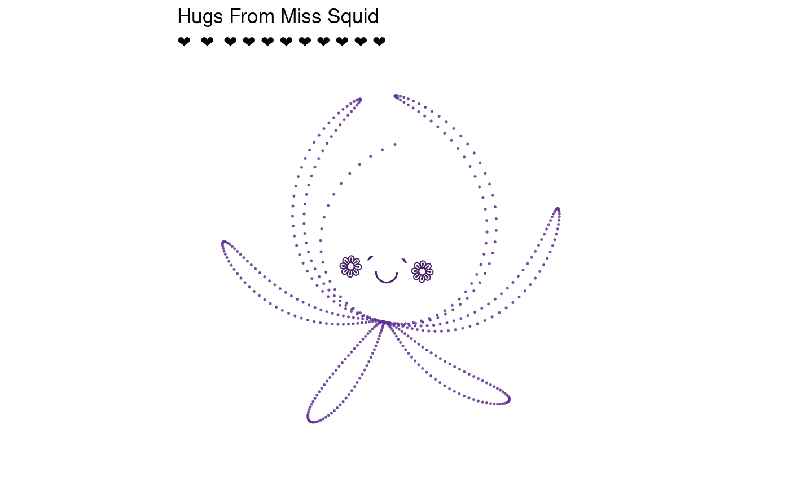
Plot 2
Code
library(ggplot2)library(dplyr)library(viridis)set.seed(42)x<-seq(-4*pi, 4*pi, length.out =2000)# Mountain Layersmountain_data<-data.frame( x =rep(x, 5), layer =rep(1:5, each =length(x)))%>%mutate(# Base mountain shape base_height =case_when(layer==1~3*sin(x/2)+1.5*sin(x/1.3)+0.8*sin(x*0.7),layer==2~2.5*sin(x/1.8)+1.2*sin(x/1.1)+0.6*sin(x*0.9),layer==3~2*sin(x/2.2)+sin(x/0.9)+0.4*sin(x*1.2),layer==4~1.5*sin(x/2.8)+0.8*sin(x/1.5)+0.3*sin(x*1.5),layer==5~sin(x/3.2)+0.5*sin(x/2.1)+0.2*sin(x*1.8)),# Noise for texture noise =rnorm(n(), 0, 0.1*(6-layer)), y =pmax(base_height+noise, -layer*0.5), # Ensure layers don't go below each other# Color based on height and layer for atmospheric perspective fill_color =layer+(y-min(y))/(max(y)-min(y)))# Plot each layerp1<-ggplot()+# Layer 5 (background)geom_ribbon( data =filter(mountain_data, layer==5),aes(x =x, ymin =-2.5, ymax =y), fill ="#440154", alpha =0.6)+# Layer 4geom_ribbon( data =filter(mountain_data, layer==4),aes(x =x, ymin =-2, ymax =y), fill ="#31688e", alpha =0.7)+# Layer 3geom_ribbon( data =filter(mountain_data, layer==3),aes(x =x, ymin =-1.5, ymax =y), fill ="#26828e", alpha =0.75)+# Layer 2geom_ribbon( data =filter(mountain_data, layer==2),aes(x =x, ymin =-1, ymax =y), fill ="#35b779", alpha =0.8)+# Layer 1 (foreground)geom_ribbon( data =filter(mountain_data, layer==1),aes(x =x, ymin =-0.5, ymax =y), fill ="#fde725", alpha =0.85)+labs(title ="The Rocky Mountains", x ="", y ="")+theme_void()+theme( plot.background =element_rect(fill ="black", color =NA), panel.background =element_rect(fill ="black", color =NA), plot.title =element_text(color ="white", size =16, hjust =0.5), plot.subtitle =element_text(color ="white", size =12, hjust =0.5), legend.position ="none")print(p1)
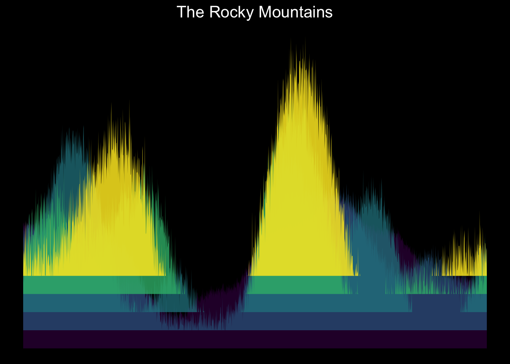
Plot 3
Code
# aRt Title: Transcript City# Use transcriptomic data from ps-04.# Select for gene name & RNA_fc values only.# Drop NAs & remove duplicates.# Filter rna_fc within a positive range that is reasonable to display.library(tidyverse)library(here)art_tbl<-read_csv(here("data/bootcamp/data_rna_protein.csv.gz"))art_tbl_trim<-art_tbl|>select(gene =geneid, rna_fc =iDUX4_logFC)|>drop_na()|>distinct(gene, .keep_all =TRUE)|>filter(rna_fc>0&rna_fc<=0.5)|># Mutate to assign `color_class` based on arbitrary rna_fc value; will be used to vary color in plotmutate( color_class =case_when(rna_fc<0.1~"A",rna_fc<0.2~"B",rna_fc<0.3~"C",rna_fc<0.4~"D", .default ="E"))|># Mutate to assign `star_class` based on first letter of gene name. Use this stackoverflow post to understand partial strings: https://stackoverflow.com/questions/56993566/how-to-create-a-new-column-based-on-partial-string-of-another-columnmutate( star_class =substr(gene, 1L, 1L))city_palette<-c("#eeaf61", "#fb9062", "#ee5d6c", "#ce4993", "#6a0d83")ggplot(art_tbl_trim,aes( x =gene, y =rna_fc, fill =color_class))+geom_col()+geom_point( shape =8, color ="white", size =0.2)+theme(# Remove legend, axis titles, grid, & make background black legend.position ="none", axis.title =element_blank(), axis.text =element_blank(), axis.ticks =element_blank(), panel.grid =element_blank(), panel.background =element_rect(fill ='black'))+scale_fill_manual(values =city_palette)
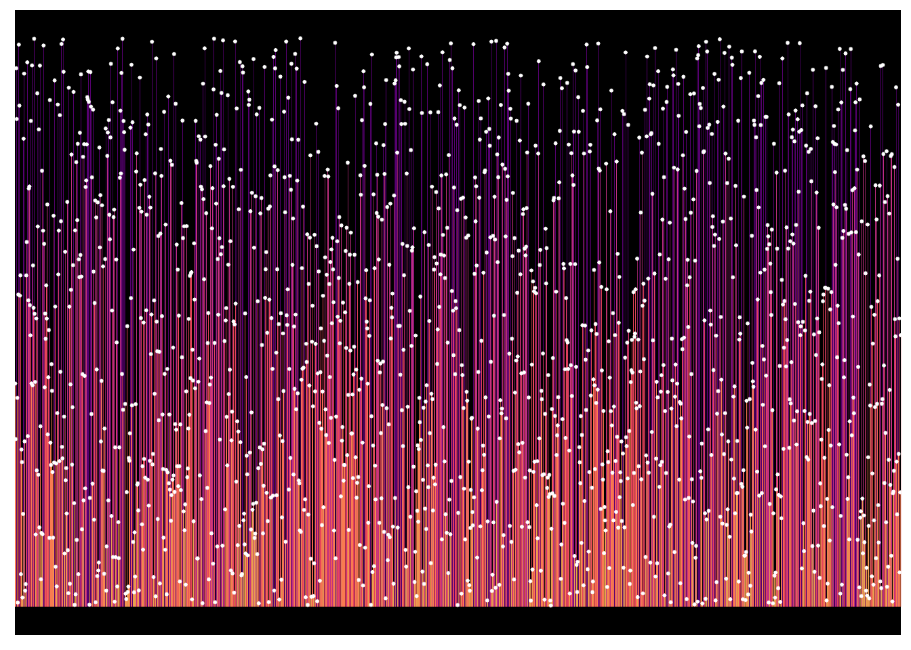
Plot 4
Code
library(ggplot2)pride_colors<-c("maroon","purple","pink","lavender","steelblue","turquoise","springgreen","snow4")stripes_df<-data.frame( ymin =seq(0, 7),#Ymin needs to match the number of colors you've picked out ymax =seq(1, 8),#Ymax is setting the width of each rectangle to be 1 unit later on color =pride_colors)base_flag<-ggplot(stripes_df)+geom_rect(aes(xmin =0, xmax =15, ymin =ymin, ymax =ymax, fill =color), color =NA)#Create a triangle polygon dftriangle_df<-data.frame( x =c(0, 0, 5), y =c(0, 8, 4)# bottom, top, center)combined_flag<-base_flag+geom_polygon( data =triangle_df,aes(x =x, y =y), fill ="orange", alpha =0.7)+scale_fill_identity()+theme_void()+coord_fixed()dots_df<-data.frame( x =runif(400, 0, 15), # Random x across flag width y =runif(400, 0, length(pride_colors)), # Random y across flag height size =runif(400, 0.5, 2), # Dot sizes alpha =runif(400, 0.1, 0.4), # Transparency color =sample(pride_colors, 400, replace =TRUE)# Pride color for each dot)# Final plotcombined_flag+geom_point( data =dots_df,aes(x =x, y =y, size =size, alpha =0.7, color =color), show.legend =FALSE)+#scale_fill_identity() +theme_void()+coord_fixed()
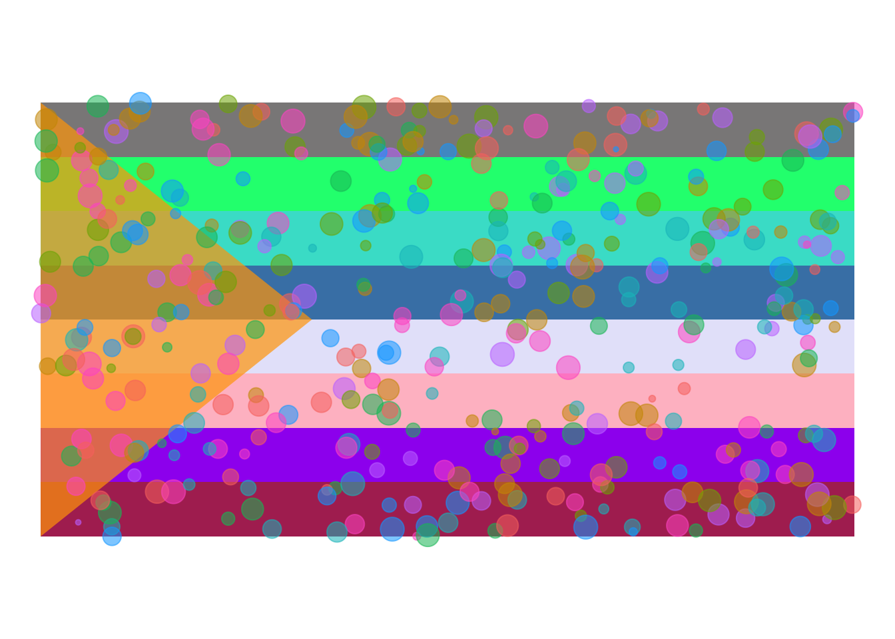
Plot 5
Code
library(tidyverse)data("trees")trees_tibble<-as_tibble(trees)ggplot_trees<-ggplot( data =trees_tibble, mapping =aes( x =Girth, y =Height, size =Volume))+geom_point( alpha =1.0, shape =8, color ="#FF0000", size =10, stroke =1)+geom_smooth( alpha =0.5, color ="#0000FF", fill ="#8A00C4", linetype ="dashed", size =3)+theme( plot.background =element_rect(fill ="#FFFF00"), panel.background =element_rect(fill ="#39FF14"), panel.grid.major =element_line(color ="#FF0000"), panel.grid.minor.x =element_line(color ="#0000FF"), panel.grid.minor.y =element_line(color ="#FFAE42"), panel.grid.major.y =element_line(color ="#FF13F0"))+labs( x ="how thick is it (in) ??", y ="vertical dominance (ft)", title ="cool facts about 31 black cherry trees")ggplot_trees
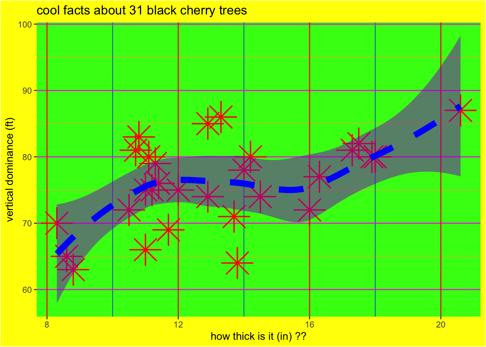
Plot 6
Code
#generating histogram with labels and titleugly_plant<-ggplot(PlantGrowth, aes(weight, fill =group, color =group))+geom_histogram()+labs(x ="PLANT WEIGHT", y ="PLANT COUNT", title ="green plants")#Theme changes for colors and position/angle of labelsugly_plant+theme( plot.background =element_rect(fill ="lightgreen"), panel.background =element_rect(fill ="darkgreen"), panel.grid.major =element_line(colour ="white"), plot.title =element_text(color ="#29AB87", angle =100, hjust =6), axis.title.x =element_text( color ="blue", angle =145, hjust =1, vjust =1), axis.title.y =element_text( color ="yellow", angle =250, hjust =1, vjust =1), legend.title =element_text( color ="green", angle =170, hjust =-1, vjust =-1), legend.text =element_text(color ="darkgreen", angle =120))+scale_fill_brewer(palette ="Light1")
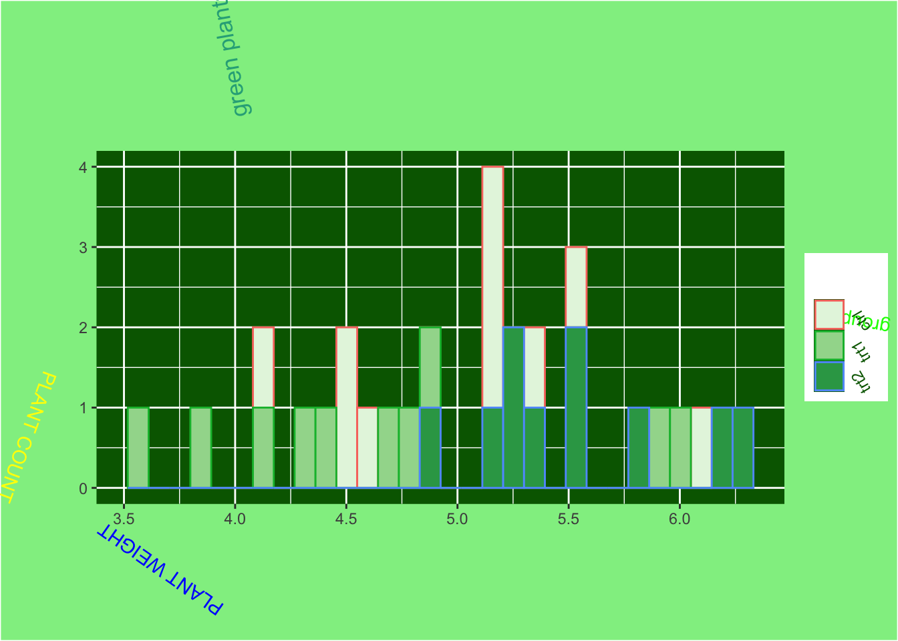
Plot 7
Code
library(tidyverse)library(here)library(gganimate)library(ragg)storms_sin<-storms|>drop_na()anim<-ggplot(storms_sin,aes( x =cos(pressure), y =sin(wind),))+geom_point(alpha =0.05, shape =11, size =8, color ="#edf8b1")+theme_void()+coord_flip()+geom_point(aes(x =cos(pressure), y =sin(lat)), alpha =0.3, shape =8, size =15, color ="#7fcdbb")+geom_density_2d_filled(aes(x =cos(pressure), y =sin(lat)), alpha =0.1, linewidth =12, color ="violet")+theme( legend.position ="none", plot.background =element_rect(fill ="#91c7d8"), panel.background =element_rect(fill ="#9c8080"))+transition_states( transition_length =0, state_length =0.001,year)spacestorm_plot<-animate(anim, device ="ragg_png", renderer =gifski_renderer())anim_save( filename ="spacestorm.gif", animation =spacestorm_plot, path =here("img"))
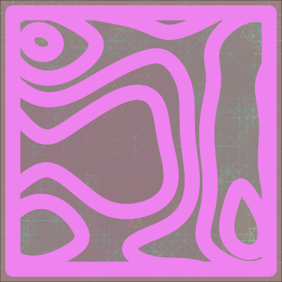
Plot 8
Code
library(tidyverse)library(emo)# library(emojifont)library(here)library(gganimate)library(ragg)data("WorldPhones")set.seed(42)worldphones_tidy<-WorldPhones%>%as.data.frame()%>%rownames_to_column(var ="year")%>%pivot_longer( cols =-year, names_to ="region", values_to ="phones")%>%mutate( emoji =case_when(region=="N.Amer"~emo::ji("eagle"),region=="Europe"~emo::ji("bear"),region=="Asia"~emo::ji("tiger"),region=="S.Amer"~emo::ji("monkey"),region=="Oceania"~emo::ji("penguin"),region=="Africa"~emo::ji("giraffe"),region=="Mid.Amer"~emo::ji("cow")))%>%select(year,emoji,region,phones)ggplot(worldphones_tidy,aes( x =year, y =phones, color =region))+geom_text(aes(label =emoji), size =4, show.legend =FALSE)+labs( x ="BEST YEARS", y ="TOO MANY PHONES", title ="ANIMALS LOVE PHONES", caption ="eagles are addicted to phones")+scale_y_continuous( limits =c(0, 100000), breaks =seq(0, 100000, 10000), labels =scales::comma)+scale_x_discrete(position ="top")+theme( axis.text.x =element_text( face ="bold", color ="#ffeda0", size =13, angle =179), axis.text.y =element_text( face ="bold", color ="orange", size =10, angle =180), plot.background =element_rect(fill ="pink"), plot.title =element_text( face ="bold.italic", color ="green", size =18, angle =183), plot.caption =element_text(color ="white", size =12), axis.title.x =element_text(size =22, color ="dark blue", angle =12), axis.title.y =element_text(color ="orange", angle =181, size =14), panel.background =element_rect(fill ="light blue"))
library(emo)library(gifski)library(ggplot2)library(gganimate)library(dplyr)library(ragg)library(here)library(showtext)# Add the system font manually# font_add("emoji", "~/.local/share/fonts/NotoColorEmoji.ttf")# showtext_auto()# Define x, y, and frames# -----------------------------# Define pathsn<-200# Plan path (straight line)x<-seq(0, 10, length.out =n)plan_y<-seq(0, 0, length.out =n)#Reality path (curvy line)reality_y<-sin(0.9*x)+cos(3.8*x)frame<-1:length(x)# Determine student emoji: happy if y>0, sad if y<=0student<-ifelse(reality_y>0,emo::ji("grinning_face"),emo::ji("anxious_face_with_sweat"))data<-data.frame(x =x, y =reality_y+0.5, frame =frame, student =student)data$student<-as.character(data$student)# -----------------------------# Obstacles (plateau points on Reality line)# -----------------------------obstacles<-data.frame( x =c(0.063,0.779,1.658,2.520,3.246,4.185,4.944,5.759,6.674,7.382,8.291,9.115,9.867), y =c(1.028,-0.339,1.997,-0.222,1.192,-1.566,0.032,-1.886,0.701,-0.622,1.920,-0.057,1.497), label =c(paste0(emo::ji("lab_coat"), emo::ji("handshake")),emo::ji("books"),paste0(emo::ji("hundred_points"), emo::ji("page_facing_up")),paste0(emo::ji("mouse_face"), emo::ji("syringe")),paste0(emo::ji("skier"), emo::ji("mountain")),paste0(emo::ji("test_tube"), emo::ji("poo")),paste0(emo::ji("sparkles"), emo::ji("brain")),emo::ji("exploding_head"),paste0(emo::ji("coffee"), emo::ji("pizza")),paste0(emo::ji("man_teacher"),emo::ji("woman_teacher"),emo::ji("angry_face")),paste0(emo::ji("money_bag"), emo::ji("memo")),paste0(emo::ji("hourglass_not_done"), emo::ji("zombie")),paste0(emo::ji("woman_scientist"), emo::ji("man_scientist"))))obstacles$label<-as.character(obstacles$label)# Build ggplotp<-ggplot()+geom_line(aes(x, y =plan_y), color ="steelblue", linetype ="dashed", linewidth =1)+geom_line(aes(x, y =reality_y), color ="red", linewidth =1.5)+geom_text( data =data,aes(x, y, label =student, family ="emoji"), size =10)+geom_text( data =obstacles,aes(x, y, label =label), size =10, family ="emoji")+theme_minimal(base_size =16)+annotate("text", x =-0.5, y =0, label ="Plan", color ="steelblue", size =6)+annotate("text", x =-0.5, y =2, label ="Reality", color ="red", size =6)+geom_text(aes(x =10.3, y =0, label =as.character(emo::ji("graduation_cap"))), size =10, family ="emoji")+theme_void(base_size =16)+labs(title ="PhD Journey: Plan vs Reality")# -----------------------------# Animate along frames# -----------------------------anim<-p+transition_reveal(along =frame)gif_plot<-animate(anim, nframes =200, fps =15, width =800, height =400, device ="ragg_png", renderer =gifski_renderer())# -----------------------------# Save GIF# -----------------------------anim_save( filename ="phd_journey.gif", animation =gif_plot, path =here())
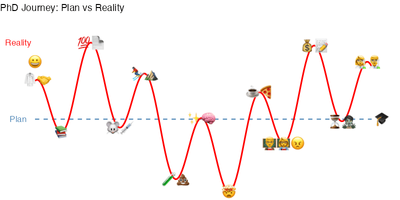
Plot 13
Code
aqtib<-as_tibble(airquality)|>drop_na()ggplot(aqtib, mapping =aes( x =Day, y =Ozone, color =Temp))+geom_point(shape =8, alpha =0.5)+scale_x_reverse()+scale_y_log10()+scale_color_gradientn(colours =rainbow(9))+geom_smooth(method =lm, na.rm =FALSE, orientation =NA, se =FALSE)+facet_wrap(~Month, labeller =labeller( Month =c("5"="yam","6"="enuj","7"="yulj","8"="tsugua","9"="rebmetpes")))+labs( x ="Month time (days) ->", y ="OO O ( b i l l i o n s )", title ="global warming in new york is in june and september", caption ="(august seems to get cold. hard to tell, but seems like its still snowing)")+theme( plot.background =element_rect(fill ="yellow"), strip.background =element_blank(), strip.text =element_text(size =13, color ="orange"), panel.border =element_rect(color ="yellow3", fill =NA, size =1), panel.background =element_rect(fill ="yellow"), panel.grid.major =element_line(color ="yellow"), panel.grid.minor =element_line( color ="blue", linetype ="dotted", linewidth =1), axis.title.x =element_text(size =13, color ="yellow3", angle =180), axis.title.y =element_text(size =13, color ="darkgreen"), legend.background =element_rect(fill ="yellow"),)+geom_segment( data =subset(aqtib, Month=="6"),aes(x =3, y =3, xend =12, yend =15), arrow =arrow(length =unit(0.2, "inches")), color ="red")+geom_segment( data =subset(aqtib, Month=="7"),aes(x =20, y =2, xend =16, yend =6), arrow =arrow(length =unit(0.2, "inches")), color ="blue")+geom_segment( data =subset(aqtib, Month=="9"),aes(x =27, y =2, xend =14, yend =17), arrow =arrow(length =unit(0.2, "inches")), color ="red")+geom_text( data =subset(aqtib, Month=="6"),aes(x =5, y =3, label ="blast off!"), color ="purple", fontface ="bold")+geom_text( data =subset(aqtib, Month=="9"),aes(x =25, y =2, label ="heat rises!"), color ="purple", fontface ="bold")+geom_text( data =subset(aqtib, Month=="7"),aes(x =20, y =2, label ="still snowing???"), color ="grey")
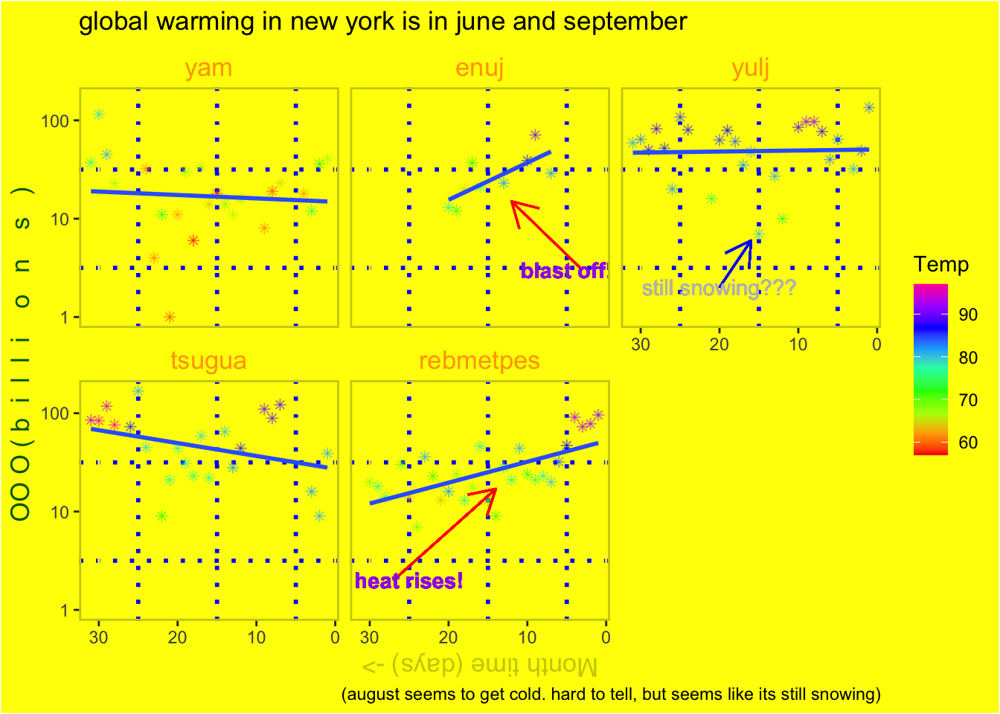
Plot 14
Code
Pattern<-read_csv(here("Cross-Stitch-Pattern_250901.csv"))Floss_colors<-c("Black"="#000000","Cinnamon"="#E69F00","Fern Green"="#009E73","Raspberry - Light"="#CC79A7","Stone Grey - Dark"="#B0B0B0","Surf Blue - Light"="#56B4E9","Topaz - Light"="#D55E00")ggplot(Pattern,aes(x =x, y =y, color =color_name))+geom_point( shape =4, size =1.6, stroke =1.3)+scale_color_manual(values =Floss_colors)+coord_fixed(ratio =1)+labs( x =NULL, y =NULL, title ="Cross Stitch Pattern")+theme( axis.text =element_blank(), axis.ticks =element_blank(), panel.background =element_blank(), legend.position ="none", plot.title =element_text( size =18, face ="bold", family ="mono", hjust =0.5))
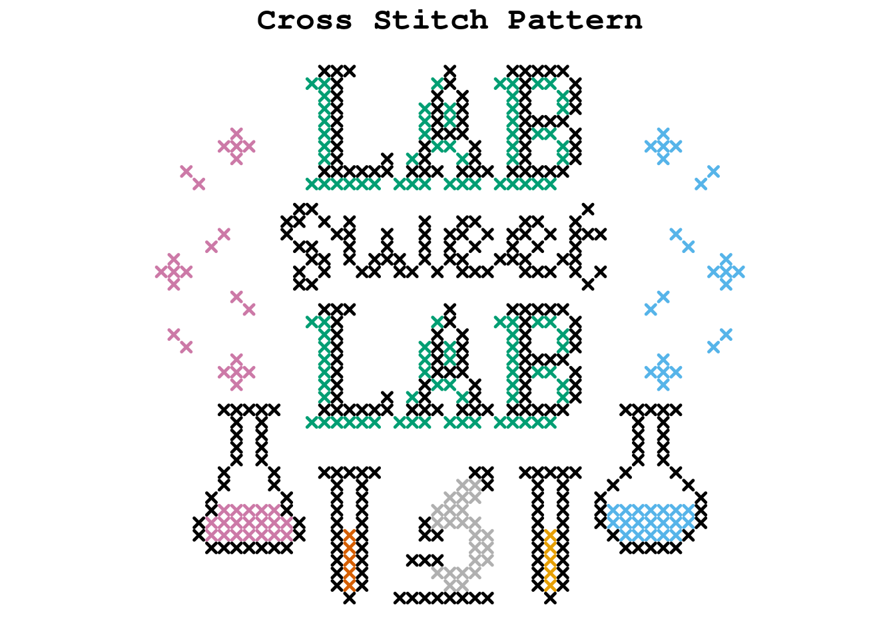
Plot 15
Code
library(tidyverse)library(emo)# library(emojifont)library(here)library(gganimate)library(ragg)data("WorldPhones")set.seed(42)worldphones_tidy<-WorldPhones%>%as.data.frame()%>%rownames_to_column(var ="year")%>%pivot_longer( cols =-year, names_to ="region", values_to ="phones")%>%mutate( emoji =case_when(region=="N.Amer"~emo::ji("eagle"),region=="Europe"~emo::ji("bear"),region=="Asia"~emo::ji("tiger"),region=="S.Amer"~emo::ji("monkey"),region=="Oceania"~emo::ji("penguin"),region=="Africa"~emo::ji("giraffe"),region=="Mid.Amer"~emo::ji("cow")))%>%select(year,emoji,region,phones)ggplot(worldphones_tidy,aes( x =year, y =phones, color =region))+geom_text(aes(label =emoji), size =4, show.legend =FALSE)+labs( x ="BEST YEARS", y ="TOO MANY PHONES", title ="ANIMALS LOVE PHONES", caption ="eagles are addicted to phones")+scale_y_continuous( limits =c(0, 100000), breaks =seq(0, 100000, 10000), labels =scales::comma)+scale_x_discrete(position ="top")+theme( axis.text.x =element_text( face ="bold", color ="#ffeda0", size =13, angle =179), axis.text.y =element_text( face ="bold", color ="orange", size =10, angle =180), plot.background =element_rect(fill ="pink"), plot.title =element_text( face ="bold.italic", color ="green", size =18, angle =183), plot.caption =element_text(color ="white", size =12), axis.title.x =element_text(size =22, color ="dark blue", angle =12), axis.title.y =element_text(color ="orange", angle =181, size =14), panel.background =element_rect(fill ="light blue"))print(worldphones_tidy)
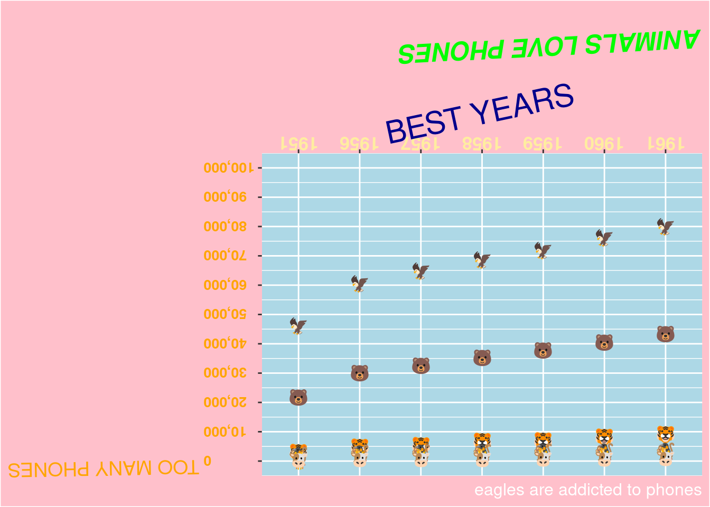
Plot 16
Code
library(ggplot2)library(tidyverse)echo=TRUEsun_tib<-tibble( year =as.numeric(time(sunspots)), sunspots =as.numeric(sunspots))ggplot(sun_tib,aes(x =year, y =sunspots))+geom_bar( stat ="identity", fill ="green", color ="red", width =100)+geom_line(color ="purple", linewidth =5, linetype ="dotdash")+geom_point(color ="yellow", size =2, alpha =0.3, shape =8)+geom_smooth( method ="loess", span =.04, color ="white", fill ="orange", formula =y~x,)+scale_y_reverse()+theme_void(base_size =28)+theme( panel.background =element_rect(fill ="pink"), plot.background =element_rect(fill ="#FFDB58"), plot.title =element_text( color ="limegreen", face ="bold", hjust =0.5, family ="Comic Sans MS", angle =2, size =35), axis.text.x =element_text( face ="bold.italic", color ="red", size =4, angle =180), axis.title.x =element_text( size =12, color ="orange", angle =2), plot.subtitle =element_text( color ="orange", face ="bold", family ="Comic Sans MS", size =20, hjust =".4"), plot.caption =element_text( color ="white", face ="italic", family ="Comic Sans MS", size =30, hjust =".5"))+labs( title =" SUNSPOTs", subtitle ="Hotter than the hottest flame on earth", caption ="Cant escape the sunspots", x ="time is relative", y ="spotty bois")
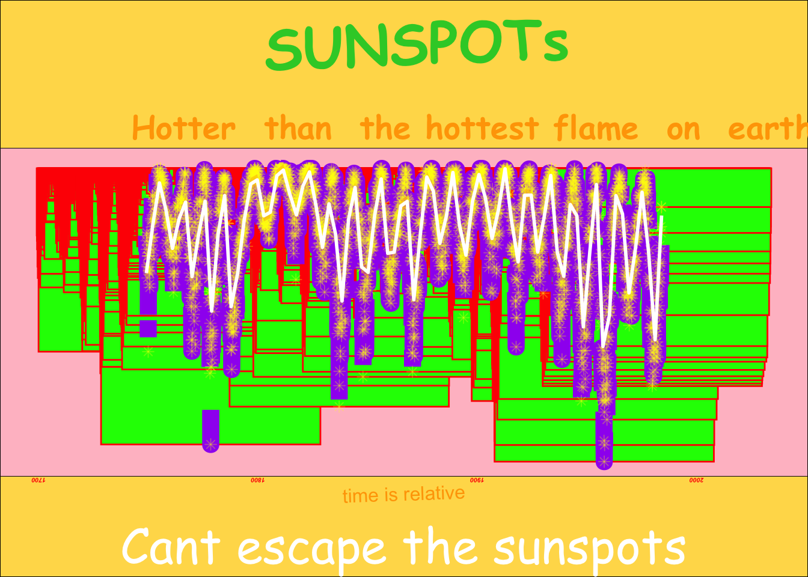
Plot 17
Code
library(ggplot2)library(dplyr)library(purrr)set.seed(1972)library(gganimate)letters_df<-data.frame( x =1:4, y =0, lab =c("A", "B", "B", "A"), col =c("#e91e63", "#ff8fc7", "#ff8fc7", "#e91e63")# pinks)shape_pool<-c(8, 3, 4, 18, 17)n_sparkles<-700sparkles<-data.frame( x =runif(n_sparkles, 0.3, 4.7), y =runif(n_sparkles, -1.2, 1.2), size =runif(n_sparkles, 0.8, 3.0), alpha =runif(n_sparkles, 0.80, 1), col =sample(c("#f72585", "#ff5fa2", "#ff8fc7", "#ffd1e8", "#ffd166"),n_sparkles,TRUE), shape =sample(shape_pool, n_sparkles, TRUE))make_bursts<-function(n_bursts=40, min_rays=6, max_rays=10){centers<-data.frame( x0 =runif(n_bursts, 0.4, 4.6), y0 =runif(n_bursts, -1.1, 1.1))bursts<-do.call(rbind,lapply(1:nrow(centers), function(i){k<-sample(min_rays:max_rays, 1)th<-seq(0, 2*pi, length.out =k+1)[-(k+1)]L<-runif(k, 0.05, 0.12)data.frame( x =centers$x0[i], y =centers$y0[i], xend =centers$x0[i]+L*cos(th), yend =centers$y0[i]+L*sin(th), alpha =runif(1, 0.08, 0.18), size =runif(1, 0.4, 0.9), col =sample(c("#f72585", "#ff8fc7", "#ffd1e8"), 1))}))bursts}bursts<-make_bursts()gg<-ggplot()+geom_segment( data =bursts,aes( x =x, y =y, xend =xend, yend =yend, alpha =alpha, size =size, color =col), lineend ="round", show.legend =FALSE)+geom_point( data =sparkles,aes(x, y, shape =shape, size =size, alpha =alpha, color =col), show.legend =FALSE)+geom_text( data =letters_df,aes(x, y, label =lab, color =col), fontface ="bold", size =30)+scale_shape_identity()+scale_size_identity()+scale_alpha_identity()+scale_color_identity()+coord_cartesian(xlim =c(0.2, 4.8), ylim =c(-1.4, 1.4), expand =FALSE)+theme_void(base_size =14)+theme( plot.background =element_rect(fill ="white", color =NA), panel.background =element_rect(fill ="white", color =NA), plot.margin =margin(30, 30, 30, 30))gg
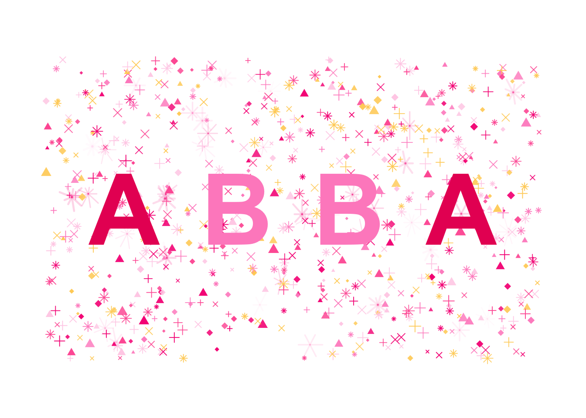
Plot 18
Code
library(tidyverse)library(ggplot2)msleep_tbl<-drop_na(msleep)ggplot(msleep_tbl,aes( x =brainwt, y =sleep_rem, color =order, shape =vore))+geom_jitter(size =10)+theme( plot.background =element_rect(fill ="#c3cb6e"), plot.title =element_text( size =30, hjust =0.25, color ="#72601b", angle =3), plot.caption =element_text(size =10, face ="italic", angle =25), panel.background =element_rect(fill ='#c6c58b', size =4), panel.border =element_rect(fill ='NA', color ="#818c3c", size =2), axis.title.x =element_text( face ="bold.italic", size =13, color ="#e4e6a8", angle =70), axis.title.y =element_text( face ="bold", size =20, color ="#e4e6a8", angle =115), axis.text =element_text(face ="italic", size =15), axis.text.x.bottom =element_text(angle =140), legend.background =element_rect(fill ="#fbff00"), legend.key =element_rect(fill ="#b78b3c"),#legend.direction = "vertical", legend.position ="bottom",#legend.justification = "left", legend.title =element_text(family ="serif", color ="#ef9e3a", size =2), legend.text =element_text( family ="mono", face ="italic", color ="#c89c45", size =4))+labs( title ="More sleeps = big brain?", x ="Brain Weight", y ="REM Cycles", col ="Species Order")
library(ggplot2)library(ggforce)library(RColorBrewer)library(dplyr)hori_lines<-tibble( x =seq(1, -1, by =-.08), xend =seq(1, -1, by =-.08), y =-1, yend =1)inner_circle<-tibble( x =0, y =0, radius =0.6)arc<-tibble( x =0, y =0, r =.5, start =seq(0, 2*pi, length.out =9)[-9], end =seq(0, 2*pi, length.out =9)[-1], type =c("A", "B", "B", "A", "A", "B", "B", "A"))neon_rain_palette<-c("#32faca", "#58d0cb", "#7fa5cb", "#a57bcc", "#cc51cd")p<-ggplot()+geom_segment( data =hori_lines,aes(x =x, xend =xend, y =y, yend =yend, color ="lines"), size =1)+geom_circle( data =inner_circle,aes(x0 =x, y0 =y, r =radius, fill ="circle_fill"), size =1, alpha =0.75, color ="#1A1A1A"# Dark border to contrast with the neon colors)+geom_arc( data =arc,aes( x0 =x, y0 =y, r =r, start =start, end =end, color ="arc_lines", type =type), size =1)+scale_color_manual( values =c("lines"=neon_rain_palette[5], # A bright purple for the lines"arc_lines"=neon_rain_palette[1]# A bright teal for the arc))+scale_fill_manual( values =c("circle_fill"=neon_rain_palette[3]# A muted blue for the circle fill))+coord_fixed()+theme_void()+theme( legend.position ="none", plot.background =element_rect(fill ="#1A1A1A"))print(p)